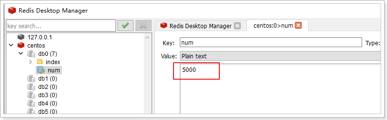
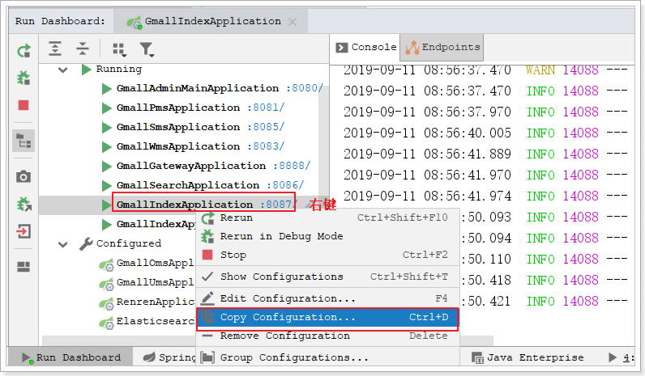
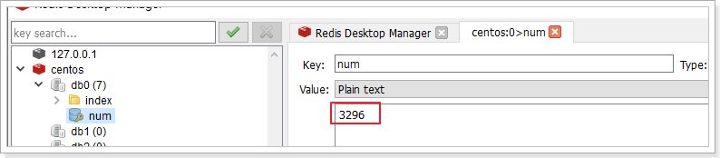
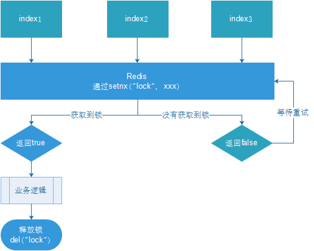
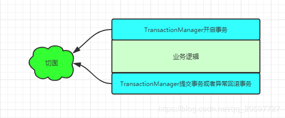

商品分类¶
1. 门户首页商品分类¶
搜索做完之后，把目光移动首页，首页最重要的模块之一便是商品分类，商品分类也是进入商品列表，找到心仪商品的另一个主要途径。

接下来就搭建一个module。这个页面作为整个商城的门户入口，访问量巨大，为了方便优化扩展，需要搭建独立的系统。
1.1. 创建首页Module¶
创建gmall-index首页工程
application.yml配置如下：bootstrap.yml配置略。。。
server:
port: 18087
spring:
cloud:
nacos:
discovery:
server-addr: localhost:8848
sentinel:
transport:
dashboard: localhost:8080
port: 8719
zipkin:
base-url: http://localhost:9411/
sender:
type: web
discovery-client-enabled: false
sleuth:
sampler:
probability: 1
redis:
host: 172.16.116.100
thymeleaf:
cache: false
feign:
sentinel:
enabled: true
启动类上的注解：
@SpringBootApplication
@EnableDiscoveryClient
@EnableFeignClients
public class GmallIndexApplication {
public static void main(String[] args) {
SpringApplication.run(GmallIndexApplication.class, args);
}
}
并把首页的页面及common目录 copy到templates目录下：

在网关工程中配置首页路由：
- id: index-route1 # 首页的同步请求路由
uri: lb://index-service
predicates:
- Host=www.gmall.com
# - Path=/index/** 如果写在一个里面，他们的关系是and关系
- id: index-route2 # 首页的异步请求路由
uri: lb://index-service
predicates:
- Path=/index/**
并在cors跨域过滤器中，添加允许跨域的域名地址：
重启网关。修改nginx配置如下：
重新加载配置文件：nginx -s reload
1.2. 跳转到首页¶
跳转到首页，并加载一级分类。
实现如下：

IndexController：
@Controller
public class IndexController {
@Autowired
private IndexService indexService;
@GetMapping
public String toIndex(Model model){
List<CategoryEntity> categoryEntities = this.indexService.queryLvl1Categories();
model.addAttribute("cates", categoryEntities);
// TODO: 加载其他数据
return "index";
}
}
IndexService：
@Service
public class IndexService {
@Autowired
private GmallPmsFeign pmsFeign;
public List<CategoryEntity> queryLvl1Categories() {
ResponseVo<List<CategoryEntity>> listResponseVo = this.pmsClient.queryCategoriesByPid(0l);
return listResponseVo.getData();
}
}
GmallPmsFeign：
@FeignClient("pms-service")
public interface GmallPmsClient extends GmallPmsApi {
}
注意：需要引入gmall-pms-interface的依赖
<dependency>
<groupId>com.atguigu</groupId>
<artifactId>gmall-pms-interface</artifactId>
<version>0.0.1-SNAPSHOT</version>
</dependency>
1.3. 获取二、三级分类¶
对标京东：
为了提高页面的响应速度，这里异步加载一级分类对应的二级分类及其下的所有三级分类。
结合接口文档：
请求地址：/index/cates/{pid}
请求方式：GET
请求参数：pid（一级分类的id）
正确响应：List<CategoryEntity> 需要给CategoryEntity扩展一个字段subs
需要gmall-pms提供这样的接口，然后在gmall-index中调用这个接口。
1.3.1. gmall-pms提供数据接口¶
在CategoryController中添加方法：
@GetMapping("subs/{pid}")
public ResponseVo<List<CategoryEntity>> queryCategoriesWithSub(@PathVariable("pid")Long pid){
List<CategoryEntity> categoryEntityList = this.categoryService.queryCategoriesWithSub(pid);
return ResponseVo.ok(categoryEntityList);
}
CategoryService：
public interface CategoryService extends IService<CategoryEntity> {
PageResultVo queryPage(PageParamVo paramVo);
List<CategoryEntity> queryCategory(Long parentId);
List<CategoryEntity> queryCategoriesWithSub(Long pid);
}
在CategoryServiceImpl实现类中实现方法：
@Autowired
private CategoryMapper categoryMapper;
@Override
public List<CategoryEntity> queryCategoriesWithSub(Long pid) {
return this.categoryMapper.queryCategoriesByPid(pid);
}
CategoryMapper：
@Mapper
public interface CategoryMapper extends BaseMapper<CategoryEntity> {
List<CategoryEntity> queryCategoriesByPid(Long pid);
}
CategoryMapper.xml：
<?xml version="1.0" encoding="UTF-8"?>
<!DOCTYPE mapper PUBLIC "-//mybatis.org//DTD Mapper 3.0//EN" "http://mybatis.org/dtd/mybatis-3-mapper.dtd">
<mapper namespace="com.atguigu.gmall.pms.mapper.CategoryMapper">
<resultMap id="CategoryMap" type="categoryEntity" autoMapping="true">
<collection property="subs" javaType="list" ofType="categoryEntity" select="queryCategoriesByPid" column="id"/>
</resultMap>
<select id="queryCategoriesByPid" resultMap="CategoryMap">
select * from pms_category where parent_id = #{pid}
</select>
</mapper>
测试：
1.3.2. gmall-pms-interface定义api方法¶
在GmallPmsApi定义抽象的api接口方法
@GetMapping("pms/category/subs/{pid}")
public ResponseVo<List<CategoryEntity>> queryCategoriesWithSub(@PathVariable("pid")Long pid);
1.3.3. gmall-index调用接口¶
IndexController：
@ResponseBody
@GetMapping("index/cates/{pid}")
public ResponseVo<List<CategoryEntity>> queryLvl2CategoriesWithSub(@PathVariable("pid")Long pid){
List<CategoryEntity> categoryEntities = this.indexService.queryLvl2CategoriesWithSub(pid);
return ResponseVo.ok(categoryEntities);
}
IndexService：
public List<CategoryEntity> queryLvl2CategoriesWithSub(Long pid) {
ResponseVo<List<CategoryEntity>> listResponseVo = this.pmsClient.queryCategoriesWithSub(pid);
return listResponseVo.getData();
}
1.3.4. 整合测试¶
重启测试：
访问首页，效果如下：
2. 缓存¶
首页的访问量非常大，而首页中的商品类目访问量更大，鼠标移动就在访问，查询所有的数据，如果每次访问都实时到数据库获取数据，数据库的访问压力太大。
而这些信息一般更新的频率比较低，短时间内不会发生改变。因此，我们可以考虑在前台系统中，增加一层缓存，把这些数据缓存起来，请求到来时，不再调用数据接口，而是直接读取缓存中的数据。
这样就能大大减少首页分类加载所需时间，提高并发性能。
加不加缓存的标准：
-
变化频率低
-
访问频繁
实现：使用Redis实现缓存。
2.1. 如何实现¶
- 先读缓存，缓存有，直接返回。
- 缓存没有，再读数据库
2.2. 缓存的基本实现¶
接下来以根据父节点查询子节点演示缓存功能：
@Autowired
private StringRedisTemplate redisTemplate;
public static final String KEY_PREFIX = "index:category:";
public List<CategoryEntity> queryLvl2CategoriesWithSub(Long pid) {
// 从缓存中获取
String cacheCategories = this.redisTemplate.opsForValue().get(KEY_PREFIX + pid);
if (StringUtils.isNotBlank(cacheCategories)){
// 如果缓存中有，直接返回
List<CategoryEntity> categoryEntities = JSON.parseArray(cacheCategories, CategoryEntity.class);
return categoryEntities;
}
ResponseVo<List<CategoryEntity>> subCategoryResp = this.gmallPmsFeign.querySubCategory(pid);
// 把查询结果放入缓存
this.redisTemplate.opsForValue().set(KEY_PREFIX + pid, JSON.toJSONString(subCategoryResp), 30, TimeUnit.DAYS);
return subCategoryResp.getData();
}
查询一级分类的缓存功能请自行实现。
测试：

2.3. 缓存一致性¶
- 双写模式：写数据库，写缓存
- 失效模式：缓存失效（删除缓存），写数据库
读取缓存数据一致性一般没有什么问题，但是一旦涉及到数据更新：数据库和缓存更新，就容易出现**缓存(Redis)和数据库（MySQL）间的数据一致性问题**。
不管先保存到MySQL，还是先保存到Redis都面临着一个保存成功而另外一个保存失败的情况。
不管是先写MySQL数据库，再删除Redis缓存；还是先删除缓存，再写库，都有可能出现数据不一致的情况。举一个例子：
-
如果删除了缓存Redis，还没有来得及写库MySQL，另一个线程就来读取，发现缓存为空，则去数据库中读取数据写入缓存，此时缓存中为脏数据。
-
如果先写了库，在删除缓存前，写库的线程宕机了，没有删除掉缓存，则也会出现数据不一致情况。
因为写和读是并发的，没法保证顺序,就会出现缓存和数据库的数据不一致的问题。
解决：
- 基于mysql的binlog日志（canal）
- 消息队列
2.4. 缓存常见问题¶
缓存最常见的3个问题：
-
缓存穿透
-
缓存雪崩
-
缓存击穿
缓存穿透**是指查询一个**不存在的数据，由于缓存无法命中，将去查询数据库，但是数据库也无此记录，并且出于容错考虑，我们没有将这次查询的null写入缓存，这将导致这个不存在的数据每次请求都要到存储层去查询，失去了缓存的意义。在流量大时，可能DB就挂掉了，要是有人利用不存在的key频繁攻击我们的应用，这就是**漏洞**。
解决：空结果也进行缓存，但它的过期时间会很短，最长不超过五分钟。
缓存雪崩**是指在我们设置缓存时采用了**相同的过期时间，导致缓存在某一时刻同时失效，请求全部转发到DB，DB瞬时压力过重雪崩。
解决：原有的失效时间基础上增加一个随机值，比如1-5分钟随机，这样每一个缓存的过期时间的重复率就会降低，就很难引发集体失效的事件。
**缓存击穿**是指对于一些设置了过期时间的key，如果这些key可能会在某些时间点被超高并发地访问，是一种非常“热点”的数据。这个时候，需要考虑一个问题：如果这个key在大量请求同时进来之前正好失效，那么所有对这个key的数据查询都落到db，我们称为缓存击穿。
与缓存雪崩的区别：
- 击穿是一个热点key失效
- 雪崩是很多key集体失效
解决：锁

3. 分布式锁¶
3.1. 本地锁的局限性¶
之前，我们学习过synchronized及lock锁，这些锁都是本地锁。接下来写一个案例，演示本地锁的问题
3.1.1. 编写测试代码¶
在gmall-index中的IndexController中添加测试方法：
@GetMapping("index/testlock")
public ResponseVo<Object> testLock(){
indexService.testLock();
return ResponseVo.ok(null);
}
在IndexService方法中添加方法：
public void testLock() {
// 查询redis中的num值
String value = this.redisTemplate.opsForValue().get("num");
// 没有该值return
if (StringUtils.isBlank(value)){
return ;
}
// 有值就转成成int
int num = Integer.parseInt(value);
// 把redis中的num值+1
this.redisTemplate.opsForValue().set("num", String.valueOf(++num));
}
3.1.2. 使用ab工具测试¶
之前在redis中，玩过ab测试工具：httpd-tools（yum install -y httpd-tools）
ab -n（一次发送的请求数） -c（请求的并发数） 访问路径
测试之前需要在linux中修改hosts文件，添加域名映射：vi /etc/hosts
测试如下：5000请求，100并发
查看redis中的值：

只有186。这代码问题很大！
3.1.3. 添加本地锁¶
使用ab工具压力测试：5000次请求，并发100
查看redis中的结果：

完美！是否真的完美？
接下来再看集群情况下，会怎样？
3.1.4. 本地锁问题演示¶
接下来启动18087 18088 18089三个运行实例。
运行多个gmall-index实例：

这样就能启动多个运行实例
由于这三个运行实例的服务名都是index-service，而网关配置的就是通过服务名负载均衡，我们只要通过网关访问，网关就会给我们做负载均衡了。
再次执行之前的压力测试，查看redis中的值：

集群情况下又出问题了！！！
以上测试，可以发现：
本地锁只能锁住同一工程内的资源，在分布式系统里面都存在局限性。
此时需要分布式锁。。
3.2. 分布式锁的实现¶
随着业务发展的需要，原单体单机部署的系统被演化成分布式集群系统后，由于分布式系统多线程、多进程并且分布在不同机器上，这将使原单机部署情况下的并发控制锁策略失效，单纯的Java API并不能提供分布式锁的能力。为了解决这个问题就需要一种跨JVM的互斥机制来控制共享资源的访问，这就是分布式锁要解决的问题！
分布式锁主流的实现方案：
- 基于数据库实现分布式锁
- 基于缓存（Redis等）
- 基于Zookeeper
每一种分布式锁解决方案都有各自的优缺点：
- 性能：redis最高
- 可靠性：zookeeper最高
这里，我们就基于redis实现分布式锁。
3.2.1. 基本实现¶
借助于redis中的命令setnx(key, value)，key不存在就新增，存在就什么都不做。同时有多个客户端发送setnx命令，只有一个客户端可以成功，返回1（true）；其他的客户端返回0（false）。

- 多个客户端同时尝试获取锁（setnx）
- 获取成功，执行业务逻辑，执行完成释放锁（del）
- 其他客户端等待重试
代码：
public void testLock() {
// 1. 从redis中获取锁,setnx
Boolean lock = this.redisTemplate.opsForValue().setIfAbsent("lock", "111");
if (lock) {
// 查询redis中的num值
String value = this.redisTemplate.opsForValue().get("num");
// 没有该值return
if (StringUtils.isBlank(value)){
return ;
}
// 有值就转成成int
int num = Integer.parseInt(value);
// 把redis中的num值+1
this.redisTemplate.opsForValue().set("num", String.valueOf(++num));
// 2. 释放锁 del
this.redisTemplate.delete("lock");
} else {
// 3. 每隔1秒钟回调一次，再次尝试获取锁
try {
Thread.sleep(1000);
testLock();
} catch (InterruptedException e) {
e.printStackTrace();
}
}
}
重启，服务集群，通过网关压力测试：
查看redis中num的值：

基本实现。
问题：setnx刚好获取到锁，业务逻辑出现异常，导致锁无法释放
解决：设置过期时间，自动释放锁。
3.2.2. 优化之设置锁的过期时间¶
设置过期时间有两种方式：
- 首先想到通过expire设置过期时间（缺乏原子性：如果在setnx和expire之间出现异常，锁也无法释放）
- 在set时指定过期时间（推荐）

设置过期时间：
压力测试肯定也没有问题。自行测试
问题：可能会释放其他服务器的锁。
场景：如果业务逻辑的执行时间是7s。执行流程如下
-
index1业务逻辑没执行完，3秒后锁被自动释放。
-
index2获取到锁，执行业务逻辑，3秒后锁被自动释放。
-
index3获取到锁，执行业务逻辑
-
index1业务逻辑执行完成，开始调用del释放锁，这时释放的是index3的锁，导致index3的业务只执行1s就被别人释放。
最终等于没锁的情况。
解决：setnx获取锁时，设置一个指定的唯一值（例如：uuid）；释放前获取这个值，判断是否自己的锁
3.2.3. 优化之UUID防误删¶
实现如下：

问题：删除操作缺乏原子性。
场景：
- index1执行删除时，查询到的lock值确实和uuid相等
- index1执行删除前，lock刚好过期时间已到，被redis自动释放
- index2获取了lock
- index1执行删除，此时会把index2的lock删除
3.2.4. 优化之LUA脚本保证删除的原子性¶
删除LUA脚本：
if redis.call('get', KEYS[1]) == ARGV[1] then return redis.call('del', KEYS[1]) else return 0 end
实现：
public void testLock() {
// 1. 从redis中获取锁,setnx
String uuid = UUID.randomUUID().toString();
Boolean lock = this.redisTemplate.opsForValue().setIfAbsent("lock", uuid, 3, TimeUnit.SECONDS);
if (lock) {
// 查询redis中的num值
String value = this.redisTemplate.opsForValue().get("num");
// 没有该值return
if (StringUtils.isBlank(value)){
return ;
}
// 有值就转成成int
int num = Integer.parseInt(value);
// 把redis中的num值+1
this.redisTemplate.opsForValue().set("num", String.valueOf(++num));
// 2. 释放锁 del
String script = "if redis.call('get', KEYS[1]) == ARGV[1] then return redis.call('del', KEYS[1]) else return 0 end";
this.redisTemplate.execute(new DefaultRedisScript<>(script), Arrays.asList("lock"), uuid);
// if (StringUtils.equals(uuid, this.redisTemplate.opsForValue().get("num"))) {
// this.redisTemplate.delete("lock");
// }
} else {
// 3. 每隔1秒钟回调一次，再次尝试获取锁
try {
Thread.sleep(1000);
testLock();
} catch (InterruptedException e) {
e.printStackTrace();
}
}
}
3.2.5. 优化之可重入锁¶
由于上述加锁命令使用了 SETNX ，一旦键存在就无法再设置成功，这就导致后续同一线程内继续加锁，将会加锁失败。当一个线程执行一段代码成功获取锁之后，继续执行时，又遇到加锁的子任务代码，可重入性就保证线程能继续执行，而不可重入就是需要等待锁释放之后，再次获取锁成功，才能继续往下执行。
用一段 Java 代码解释可重入：
public synchronized void a() {
b();
}
public synchronized void b() {
// pass
}
假设 X 线程在 a 方法获取锁之后，继续执行 b 方法，如果此时**不可重入**，线程就必须等待锁释放，再次争抢锁。
锁明明是被 X 线程拥有，却还需要等待自己释放锁，然后再去抢锁，这看起来就很奇怪，我释放我自己~
可重入性就可以解决这个尴尬的问题，当线程拥有锁之后，往后再遇到加锁方法，直接将加锁次数加 1，然后再执行方法逻辑。退出加锁方法之后，加锁次数再减 1，当加锁次数为 0 时，锁才被真正的释放。
可以看到可重入锁最大特性就是计数，计算加锁的次数。所以当可重入锁需要在分布式环境实现时，我们也就需要统计加锁次数。
接下来，我们基于 Redis Hash 实现方案
3.2.5.1. 加锁¶
Redis 提供了 Hash （哈希表）这种可以存储键值对数据结构。所以我们可以使用 Redis Hash 存储的锁的重入次数，然后利用 lua 脚本判断逻辑。
if (redis.call('exists', KEYS[1]) == 0 or redis.call('hexists', KEYS[1], ARGV[1]) == 1)
then
redis.call('hincrby', KEYS[1], ARGV[1], 1);
redis.call('expire', KEYS[1], ARGV[2]);
return 1;
else
return 0;
end
假设值为：KEYS:[lock], ARGV[uuid, expire]
如果锁不存在或者这是自己的锁，就通过hincrby（不存在新增，存在就加1）获取锁或者锁次数加1。
具体java代码如下：
private Boolean tryLock(String lockName, String uuid, Long expire){
String script = "if (redis.call('exists', KEYS[1]) == 0 or redis.call('hexists', KEYS[1], ARGV[1]) == 1) " +
"then" +
" redis.call('hincrby', KEYS[1], ARGV[1], 1);" +
" redis.call('expire', KEYS[1], ARGV[2]);" +
" return 1;" +
"else" +
" return 0;" +
"end";
if (!this.redisTemplate.execute(new DefaultRedisScript<>(script, Boolean.class), Arrays.asList(lockName), uuid, expire.toString())){
try {
// 没有获取到锁，重试
Thread.sleep(200);
tryLock(lockName, uuid, expire);
} catch (InterruptedException e) {
e.printStackTrace();
}
}
// 获取到锁，返回true
return true;
}
3.2.5.2. 解锁¶
-- 判断 hash set 可重入 key 的值是否等于 0
-- 如果为 nil 代表 自己的锁已不存在，在尝试解其他线程的锁，解锁失败
-- 如果为 0 代表 可重入次数被减 1
-- 如果为 1 代表 该可重入 key 解锁成功
if (redis.call('hexists', KEYS[1], ARGV[1]) == 0) then
return nil;
end;
-- 小于等于 0 代表可以解锁
if (redis.call('hincrby', KEYS[1], ARGV[1], -1) > 0) then
return 0;
else
redis.call('del', KEYS[1]);
return 1;
end;
这里之所以没有跟加锁一样使用 Boolean ,这是因为解锁 lua 脚本中，三个返回值含义如下：
- 1 代表解锁成功，锁被释放
- 0 代表可重入次数被减 1
- null 代表其他线程尝试解锁，解锁失败
如果返回值使用 Boolean，Spring-data-redis 进行类型转换时将会把 null 转为 false，这就会影响我们逻辑判断，所以返回类型只好使用 Long。
具体java代码：
private void unlock(String lockName, String uuid){
String script = "if (redis.call('hexists', KEYS[1], ARGV[1]) == 0) then" +
" return nil;" +
"end;" +
"if (redis.call('hincrby', KEYS[1], ARGV[1], -1) > 0) then" +
" return 0;" +
"else" +
" redis.call('del', KEYS[1]);" +
" return 1;" +
"end;";
// 这里之所以没有跟加锁一样使用 Boolean ,这是因为解锁 lua 脚本中，三个返回值含义如下：
// 1 代表解锁成功，锁被释放
// 0 代表可重入次数被减 1
// null 代表其他线程尝试解锁，解锁失败
Long result = this.redisTemplate.execute(new DefaultRedisScript<>(script, Long.class), Lists.newArrayList(lockName), uuid);
// 如果未返回值，代表尝试解其他线程的锁
if (result == null) {
throw new IllegalMonitorStateException("attempt to unlock lock, not locked by lockName: "
+ lockName + " with request: " + uuid);
}
}
3.2.5.3. 使用¶
public void testLock() {
// 加锁
String uuid = UUID.randomUUID().toString();
Boolean lock = this.tryLock("lock", uuid, 300l);
if (lock) {
// 读取redis中的num值
String numString = this.redisTemplate.opsForValue().get("num");
if (StringUtils.isBlank(numString)) {
return;
}
// ++操作
Integer num = Integer.parseInt(numString);
num++;
// 放入redis
this.redisTemplate.opsForValue().set("num", String.valueOf(num));
// 测试可重入性
this.testSubLock(uuid);
// 释放锁
this.unlock("lock", uuid);
}
}
// 测试可重入性
private void testSubLock(String uuid){
// 加锁
Boolean lock = this.tryLock("lock", uuid, 300l);
if (lock) {
System.out.println("分布式可重入锁。。。");
this.unlock("lock", uuid);
}
}
3.2.6. 优化之自动续期¶
A线程超时时间设为10s（为了解决死锁问题），但代码执行时间可能需要30s，然后redis服务端10s后将锁删除。 此时，B线程恰好申请锁，redis服务端不存在该锁，可以申请，也执行了代码。那么问题来了， A、B线程都同时获取到锁并执行业务逻辑，这与分布式锁最基本的性质相违背：在任意一个时刻，只有一个客户端持有锁（即独享排他）。
锁延期方法：开启子线程执行延期
/**
* 锁延期
* 线程等待超时时间的2/3时间后,执行锁延时代码,直到业务逻辑执行完毕,因此在此过程中,其他线程无法获取到锁,保证了线程安全性
* @param lockName
* @param expire 单位：毫秒
*/
private void renewTime(String lockName, Long expire){
String script = "if redis.call('exists', KEYS[1]) == 1 then return redis.call('expire', KEYS[1], ARGV[1]) else return 0 end";
new Thread(() -> {
while (this.redisTemplate.execute(new DefaultRedisScript<>(script, Boolean.class), Lists.newArrayList(lockName), expire.toString())){
try {
// 到达过期时间的2/3时间，自动续期
Thread.sleep(expire * 2 / 3);
} catch (InterruptedException e) {
e.printStackTrace();
}
}
}).start();
}
获取锁成功后，调用延期方法给锁 定时延期：
private Boolean tryLock(String lockName, String uuid, Long expire){
String script = "if (redis.call('exists', KEYS[1]) == 0 or redis.call('hexists', KEYS[1], ARGV[1]) == 1) " +
"then" +
" redis.call('hincrby', KEYS[1], ARGV[1], 1);" +
" redis.call('expire', KEYS[1], ARGV[2]);" +
" return 1;" +
"else" +
" return 0;" +
"end";
if (!this.redisTemplate.execute(new DefaultRedisScript<>(script, Boolean.class), Arrays.asList(lockName), uuid, expire.toString())){
try {
// 没有获取到锁，重试
Thread.sleep(200);
tryLock(lockName, uuid, expire);
} catch (InterruptedException e) {
e.printStackTrace();
}
}
// 锁续期
this.renewTime(lockName, expire);
// 获取到锁，返回true
return true;
}
测试方法：锁过期时间30s，线程睡眠时间60s，每隔20s会自动续期。
public void testLock() {
// 加锁
String uuid = UUID.randomUUID().toString();
Boolean lock = this.tryLock("lock", uuid, 30l);
if (lock) {
// 读取redis中的num值
String numString = this.redisTemplate.opsForValue().get("num");
if (StringUtils.isBlank(numString)) {
return;
}
// ++操作
Integer num = Integer.parseInt(numString);
num++;
// 放入redis
this.redisTemplate.opsForValue().set("num", String.valueOf(num));
// 睡眠60s，锁过期时间30s。每隔20s自动续期
try {
TimeUnit.SECONDS.sleep(60);
} catch (InterruptedException e) {
e.printStackTrace();
}
// 测试可重入性
// this.testSubLock(uuid);
// 释放锁
this.unlock("lock", uuid);
}
}
3.2.7. 优化之Redlock算法¶
redis集群状态下的问题：
- 客户端A从master获取到锁
- 在master将锁同步到slave之前，master宕掉了。
- slave节点被晋级为master节点
- 客户端B取得了同一个资源被客户端A已经获取到的另外一个锁。
安全失效！
解决集群下锁失效，参照redis官方网站针对redlock文档：https://redis.io/topics/distlock
在算法的分布式版本中，我们假设有N个Redis服务器。这些节点是完全独立的，因此我们不使用复制或任何其他隐式协调系统。**前几节已经描述了如何在单个实例中安全地获取和释放锁，在分布式锁算法中，将使用相同的方法在单个实例中获取和释放锁。**将N设置为5是一个合理的值，因此需要在不同的计算机或虚拟机上运行5个Redis主服务器，确保它们以独立的方式发生故障。
为了获取锁，客户端执行以下操作：
- 客户端以毫秒为单位获取当前时间的时间戳，作为**起始时间**。
- 客户端尝试在所有N个实例中顺序使用相同的键名、相同的随机值来获取锁定。每个实例尝试获取锁都需要时间，客户端应该设置一个远小于总锁定时间的超时时间。例如，如果自动释放时间为10秒，则**尝试获取锁的超时时间**可能在5到50毫秒之间。这样可以防止客户端长时间与处于故障状态的Redis节点进行通信：如果某个实例不可用，尽快尝试与下一个实例进行通信。
- 客户端获取当前时间 减去在步骤1中获得的**起始时间**，来计算**获取锁所花费的时间**。当且仅当客户端能够在大多数实例（至少3个）中获取锁时，并且获取锁所花费的总时间小于锁有效时间，则认为已获取锁。
- 如果获取了锁，则将锁有效时间减去 获取锁所花费的时间，如步骤3中所计算。
- 如果客户端由于某种原因（无法锁定N / 2 + 1个实例或有效时间为负）而未能获得该锁，它将尝试解锁所有实例（即使没有锁定成功的实例）。
每台计算机都有一个本地时钟，我们通常可以依靠不同的计算机来产生很小的时钟漂移。只有在拥有锁的客户端将在锁有效时间内（如步骤3中获得的）减去一段时间（仅几毫秒）的情况下终止工作，才能保证这一点。以补偿进程之间的时钟漂移
当客户端无法获取锁时，它应该在随机延迟后重试，以避免同时获取同一资源的多个客户端之间不同步（这可能会导致脑裂的情况：没人胜）。同样，客户端在大多数Redis实例中尝试获取锁的速度越快，出现裂脑情况（以及需要重试）的窗口就越小，因此理想情况下，客户端应尝试将SET命令发送到N个实例同时使用多路复用。
值得强调的是，对于未能获得大多数锁的客户端，尽快释放（部分）获得的锁有多么重要，这样就不必等待锁定期满才能再次获得锁（但是，如果发生了网络分区，并且客户端不再能够与Redis实例进行通信，则在等待密钥到期时需要付出可用性损失）。
3.2.8. 总结¶
分布式锁三个操作：
- 加锁
- 解锁
- 重试
为了确保分布式锁可用，我们至少要确保锁的实现同时满足以下几个条件：
- 互斥性。在任意时刻，只有一个客户端能持有锁。
- 不会发生死锁。即使有一个客户端在持有锁的期间崩溃而没有主动解锁，也能保证后续其他客户端能加锁。
- 解铃还须系铃人。加锁和解锁必须是同一个客户端，客户端自己不能把别人加的锁给解了。
- 加锁和解锁必须具有原子性。
- 实现可重入锁（可选）
- 为了防止锁失效，锁要具备自动续期
- 防止集群情况下锁失效，可以使用Redlock
3.3. 分布式锁之Redisson¶
Redisson是一个在Redis的基础上实现的Java驻内存数据网格（In-Memory Data Grid）。它不仅提供了一系列的分布式的Java常用对象，还提供了许多分布式服务。其中包括(BitSet, Set, Multimap, SortedSet, Map, List, Queue, BlockingQueue, Deque, BlockingDeque, Semaphore, Lock, AtomicLong, CountDownLatch, Publish / Subscribe, Bloom filter, Remote service, Spring cache, Executor service, Live Object service, Scheduler service) Redisson提供了使用Redis的最简单和最便捷的方法。Redisson的宗旨是促进使用者对Redis的关注分离（Separation of Concern），从而让使用者能够将精力更集中地放在处理业务逻辑上。

官方文档地址：https://github.com/redisson/redisson/wiki
3.3.1. 快速入门¶
- 引入依赖
<dependency>
<groupId>org.redisson</groupId>
<artifactId>redisson</artifactId>
<version>3.11.2</version>
</dependency>
- 添加配置
@Configuration
public class RedissonConfig {
@Bean
public RedissonClient redissonClient(){
Config config = new Config();
// 可以用"rediss://"来启用SSL连接
config.useSingleServer().setAddress("redis://172.16.116.100:6379");
return Redisson.create(config);
}
}
- 代码实现
@Autowired
private RedissonClient redissonClient;
@Override
public void testLock() {
RLock lock = this.redissonClient.getLock("lock"); // 只要锁的名称相同就是同一把锁
lock.lock(); // 加锁
// 查询redis中的num值
String value = this.redisTemplate.opsForValue().get("num");
// 没有该值return
if (StringUtils.isBlank(value)) {
return;
}
// 有值就转成成int
int num = Integer.parseInt(value);
// 把redis中的num值+1
this.redisTemplate.opsForValue().set("num", String.valueOf(++num));
lock.unlock(); // 解锁
}
使用ab压力测试，查看redis内容：

3.3.2. 可重入锁（Reentrant Lock）¶
基于Redis的Redisson分布式可重入锁RLock Java对象实现了java.util.concurrent.locks.Lock接口。
大家都知道，如果负责储存这个分布式锁的Redisson节点宕机以后，而且这个锁正好处于锁住的状态时，这个锁会出现锁死的状态。为了避免这种情况的发生，Redisson内部提供了一个监控锁的看门狗，它的作用是在Redisson实例被关闭前，不断的延长锁的有效期。默认情况下，看门狗检查锁的超时时间是30秒钟，也可以通过修改Config.lockWatchdogTimeout来另行指定。
另外Redisson还通过加锁的方法提供了leaseTime的参数来指定加锁的时间。超过这个时间后锁便自动解开了。
快速入门使用的就是可重入锁。也是最常使用的锁。
最常见的使用：
RLock lock = redisson.getLock("anyLock");
// 最常使用
lock.lock();
// 加锁以后10秒钟自动解锁
// 无需调用unlock方法手动解锁
lock.lock(10, TimeUnit.SECONDS);
// 尝试加锁，最多等待100秒，上锁以后10秒自动解锁
boolean res = lock.tryLock(100, 10, TimeUnit.SECONDS);
if (res) {
try {
...
} finally {
lock.unlock();
}
}
改造程序：
重启后在浏览器测试：
在这10s期间，可以在redis客户端看到lock锁的内容：

3.3.3. 读写锁（ReadWriteLock）¶
基于Redis的Redisson分布式可重入读写锁RReadWriteLock Java对象实现了java.util.concurrent.locks.ReadWriteLock接口。其中读锁和写锁都继承了RLock接口。
分布式可重入读写锁允许同时有多个读锁和一个写锁处于加锁状态。
RReadWriteLock rwlock = redisson.getReadWriteLock("anyRWLock");
// 最常见的使用方法
rwlock.readLock().lock();
// 或
rwlock.writeLock().lock();
// 10秒钟以后自动解锁
// 无需调用unlock方法手动解锁
rwlock.readLock().lock(10, TimeUnit.SECONDS);
// 或
rwlock.writeLock().lock(10, TimeUnit.SECONDS);
// 尝试加锁，最多等待100秒，上锁以后10秒自动解锁
boolean res = rwlock.readLock().tryLock(100, 10, TimeUnit.SECONDS);
// 或
boolean res = rwlock.writeLock().tryLock(100, 10, TimeUnit.SECONDS);
...
lock.unlock();
IndexController中的两个方法：
@GetMapping("index/read")
public ResponseVo<String> read(){
String msg = indexService.readLock();
return ResponseVo.ok(msg);
}
@GetMapping("index/write")
public ResponseVo<String> write(){
String msg = indexService.writeLock();
return ResponseVo.ok(msg);
}
IndexService接口方法：注意保证锁的名称一致，才能使用同一把锁
public String readLock() {
// 初始化读写锁
RReadWriteLock readWriteLock = redissonClient.getReadWriteLock("readwriteLock");
RLock rLock = readWriteLock.readLock(); // 获取读锁
rLock.lock(10, TimeUnit.SECONDS); // 加10s锁
String msg = this.redisTemplate.opsForValue().get("msg");
//rLock.unlock(); // 解锁
return msg;
}
public String writeLock() {
// 初始化读写锁
RReadWriteLock readWriteLock = redissonClient.getReadWriteLock("readwriteLock");
RLock rLock = readWriteLock.writeLock(); // 获取写锁
rLock.lock(10, TimeUnit.SECONDS); // 加10s锁
this.redisTemplate.opsForValue().set("msg", UUID.randomUUID().toString());
//rLock.unlock(); // 解锁
return "成功写入了内容。。。。。。";
}
打开开两个浏览器窗口测试：
-
同时访问写：一个写完之后，等待一会儿（约10s），另一个写开始
-
同时访问读：不用等待
-
先写后读：读要等待（约10s）写完成
-
先读后写：写要等待（约10s）读完成
3.3.4. 信号量（Semaphore）和闭锁（CountDownLatch）¶
基于Redis的Redisson的分布式信号量（Semaphore）Java对象RSemaphore采用了与java.util.concurrent.Semaphore相似的接口和用法。
RSemaphore semaphore = redisson.getSemaphore("semaphore");
semaphore.acquire();
//或
semaphore.acquire(23);
semaphore.tryAcquire();
semaphore.tryAcquire(23, TimeUnit.SECONDS);
// 释放资源
semaphore.release();
基于Redisson的Redisson分布式闭锁（CountDownLatch）Java对象RCountDownLatch采用了与java.util.concurrent.CountDownLatch相似的接口和用法。
// 在阻塞线程中
RCountDownLatch latch = redisson.getCountDownLatch("anyCountDownLatch");
latch.trySetCount(1);
latch.await();
// 在其他线程或其他JVM里
RCountDownLatch latch = redisson.getCountDownLatch("anyCountDownLatch");
latch.countDown();
需要两个线程，一个等待。一个计数countDown
演示代码
IndexController：
/**
* 等待
* @return
*/
@GetMapping("index/latch")
public ResponseVo<Object> countDownLatch(){
String msg = indexService.latch();
return ResponseVo.ok(msg);
}
/**
* 计数
* @return
*/
@GetMapping("out")
public ResponseVo<Object> out(){
String msg = indexService.countDown();
return ResponseVo.ok(msg);
}
IndexService：
public String latch() {
RCountDownLatch countDownLatch = this.redissonClient.getCountDownLatch("countdown");
try {
countDownLatch.trySetCount(6);
countDownLatch.await();
return "关门了。。。。。";
} catch (InterruptedException e) {
e.printStackTrace();
}
return null;
}
public String countDown() {
RCountDownLatch countDownLatch = this.redissonClient.getCountDownLatch("countdown");
countDownLatch.countDown();
return "出来了一个人。。。";
}
重启测试，打开两个页面：当第二个请求执行6次之后，第一个请求才会执行。

3.4. 分布式锁 + AOP实现缓存¶
随着业务中缓存及分布式锁的加入，业务代码变的复杂起来，除了需要考虑业务逻辑本身，还要考虑缓存及分布式锁的问题，增加了程序员的工作量及开发难度。而缓存的玩法套路特别类似于事务，而声明式事务就是用了aop的思想实现的。

- 以 @Transactional 注解为植入点的切点，这样才能知道@Transactional注解标注的方法需要被代理。
- @Transactional注解的切面逻辑类似于@Around
模拟事务，缓存可以这样实现：
- 自定义缓存注解@GmallCache（类似于事务@Transactional）
- 编写切面类，使用环绕通知实现缓存的逻辑封装
定义一个注解：GmallCache
@Target({ElementType.METHOD})
@Retention(RetentionPolicy.RUNTIME)
@Documented
public @interface GmallCache {
/**
* 缓存的前缀
* @return
*/
String prefix() default "";
/**
* 设置缓存的有效时间
* 单位：分钟
* @return
*/
int timeout() default 5;
/**
* 防止雪崩设置的随机值范围
* @return
*/
int random() default 5;
/**
* 防止击穿，分布式锁的key
* @return
*/
String lock() default "lock";
}
定义一个切面类加强注解：
@Aspect
@Component
public class GmallCacheAspect {
@Autowired
private StringRedisTemplate redisTemplate;
@Autowired
private RedissonClient redissonClient;
/**
* joinPoint.getArgs(); 获取方法参数
* joinPoint.getTarget().getClass(); 获取目标类
* @param joinPoint
* @return
* @throws Throwable
*/
@Around("@annotation(com.atguigu.gmall.index.config.GmallCache)")
public Object around(ProceedingJoinPoint joinPoint) throws Throwable {
// 获取切点方法的签名
MethodSignature signature = (MethodSignature)joinPoint.getSignature();
// 获取方法对象
Method method = signature.getMethod();
// 获取方法上指定注解的对象
GmallCache annotation = method.getAnnotation(GmallCache.class);
// 获取注解中的前缀
String prefix = annotation.prefix();
// 获取方法的参数
Object[] args = joinPoint.getArgs();
String param = Arrays.asList(args).toString();
// 获取方法的返回值类型
Class<?> returnType = method.getReturnType();
// 拦截前代码块：判断缓存中有没有
String json = this.redisTemplate.opsForValue().get(prefix + param);
// 判断缓存中的数据是否为空
if (StringUtils.isNotBlank(json)){
return JSON.parseObject(json, returnType);
}
// 没有，加分布式锁
String lock = annotation.lock();
RLock rLock = this.redissonClient.getLock(lock + param);
rLock.lock();
// 判断缓存中有没有，有直接返回(加锁的过程中，别的请求可能已经把数据放入缓存)
String json2 = this.redisTemplate.opsForValue().get(prefix + param);
// 判断缓存中的数据是否为空
if (StringUtils.isNotBlank(json2)){
rLock.unlock();
return JSON.parseObject(json2, returnType);
}
// 执行目标方法
Object result = joinPoint.proceed(joinPoint.getArgs());
// 拦截后代码块：放入缓存 释放分布锁
int timeout = annotation.timeout();
int random = annotation.random();
this.redisTemplate.opsForValue().set(prefix + param, JSON.toJSONString(result), timeout + new Random().nextInt(random), TimeUnit.MINUTES);
rLock.unlock();
return result;
}
}
在IndexServiceImpl的querySubCategories方法中使用注解，完成数据缓存功能：
@GmallCache(prefix = "index:cates:", timeout = 14400, random = 3600, lock = "lock")
public List<CategoryEntity> queryLvl2CategoriesWithSub(Long pid) {
ResponseVo<List<CategoryEntity>> listResp = this.gmallPmsFeign.querySubCategory(pid);
List<CategoryEntity> categoryVOS = listResp.getData();
return categoryVOS;
}
该方法的实现只需要考虑业务逻辑本身，使用注解即可完成缓存功能。
测试：
4. 布隆过滤器¶
4.1. 什么是布隆过滤器¶
本质上布隆过滤器是一种数据结构，比较巧妙的概率型数据结构（probabilistic data structure），特点是**高效地插入和查询**，可以用来告诉你 “某样东西一定不存在或者可能存在”。
相比于传统的 List、Set、Map 等数据结构，它更高效、占用空间更少，但是缺点是其返回的结果是概率性的，而不是确切的。同时布隆过滤器还有一个缺陷就是**数据只能插入不能删除**
通过介绍已经知晓布隆过滤器的作用是检索一个元素是否在集合中。可能有人认为这个功能非常简单，直接放在redis中或者数据库中查询就好了。又或者当数据量较小，内存又足够大时，使用hashMap或者hashSet等结构就好了。但是如果当这些数据量很大，数十亿甚至更多，内存装不下且数据库检索又极慢的情况，我们应该如何去处理？这个时候我们不妨考虑下布隆过滤器，因为它是一个空间效率占用极少和查询时间极快的算法，但是需要业务可以忍受一个判断失误率。
4.2. 数据结构¶
布隆过滤器是一个 bit 向量或者说 bit 数组，有一个长度为8的bit型数组，如我们所知，每个位置只占一个bit，每个位置只有0和1两种状态

如果我们要映射一个值到布隆过滤器中，我们需要使用多个不同的哈希函数生成多个哈希值，并对每个生成的哈希值对bit数组的长度（8）取余，然后在bit数组上把相应的位置设置为1，例如针对值 “baidu” 和三个不同的哈希函数分别生成了哈希值 1、4、7，则上图转变为：

Ok，我们现在再存一个值 “tencent”，如果哈希函数取余返回 3、4、8 的话，图继续变为：
接下来所有的输入对象都按照这种方式去描黑数组，最终一个布隆过滤器就生成了，它代表了所有输入对象组成的集合。值得注意的是，4 这个 bit 位由于两个值的哈希函数都返回了这个 bit 位，因此它被覆盖了。
那么如何判断一个对象是否在过滤器中呢？假设一个输入对象为taobao，我们需要通过看3个哈希函数算出3个值，然后把3个值取余（%8），就得到了3个值。然后我们判断bit数组上这3个值是否都为1，如果有一个不为1，那么taobao肯定不在这个集合里。如果都为1，则说明taobao在集合里，但有可能误判。因为当输入对象过多，而集合过小，会导致集合中大多位置都会被置为1，那么在检查taobao时，有可能taobao对应的3个位置正好都是1了，然后错误的认为taobao存在集合里。
4.3. 主要特征¶
布隆过滤器是一种牺牲准确率换取空间及时间效率的概率型数据结构。其具备如下特征：
- 布隆过滤器判定一个数据不存在，它就一定不存在
- 判定一个数据存在，它可能不存在
- 原生布隆过滤器不支持删除（Counting Bloom filter 的变种支持删除）
所以布隆过滤器存在一定的误判率问题。影响布隆过滤器误判率的因素，注意有两个：
- 布隆过滤器的bit数组长度
过小的布隆过滤器很快所有的 bit 位均为 1，那么查询任何值都会返回“可能存在”，起不到过滤的目的了。布隆过滤器的长度会直接影响误报率，布隆过滤器越长其误报率越小。
- 布隆过滤器的hash函数个数
个数越多则布隆过滤器 bit 位置位 1 的速度越快，且布隆过滤器的效率越低；但是如果太少的话，那我们的误报率会变高。
如何选择适合业务的 哈希函数的个数（k） 和bit数组的长度（m）值呢，这里有一个公式：

布隆过滤器真实失误率p公式：
k 为哈希函数个数，m 为布隆过滤器长度，n 为插入的元素个数，p 为误报率。
4.4. 代码实现¶
了解了布隆过滤器的数据结构以及特点之后，接下来基于代码来玩布隆过滤器。布隆过滤器不需要我们自己来实现，因为已经有很多成熟的实现方案：
- Google的guava
- redisson
- redis插件
4.4.1. 谷歌guava¶
主要类：BloomFilter
该类的主要方法，包括：

demo代码：
@SpringBootTest
class BloomDemoApplicationTests {
BloomFilter<String> bloomFilter;
@BeforeEach
void init(){
BloomFilter<CharSequence> bloomFilter = BloomFilter.create(Funnels.stringFunnel(Charsets.UTF_8), 10, 0.3);
bloomFilter.put("1");
bloomFilter.put("2");
bloomFilter.put("3");
bloomFilter.put("4");
bloomFilter.put("5");
}
@Test
void contextLoads() {
System.out.println(bloomFilter.mightContain("1"));
System.out.println(bloomFilter.mightContain("2"));
System.out.println(bloomFilter.mightContain("3"));
System.out.println(bloomFilter.mightContain("4"));
System.out.println(bloomFilter.mightContain("5"));
System.out.println(bloomFilter.mightContain("6"));
System.out.println(bloomFilter.mightContain("7"));
System.out.println(bloomFilter.mightContain("8"));
System.out.println(bloomFilter.mightContain("9"));
System.out.println(bloomFilter.mightContain("10"));
System.out.println(bloomFilter.mightContain("11"));
System.out.println(bloomFilter.mightContain("12"));
System.out.println(bloomFilter.mightContain("13"));
System.out.println(bloomFilter.mightContain("14"));
System.out.println(bloomFilter.mightContain("15"));
System.out.println(bloomFilter.mightContain("16"));
}
}
4.4.2. redisson¶
@Test
public void testRedissonBloom(){
RBloomFilter<String> bloom = this.redissonClient.getBloomFilter("bloom");
bloom.tryInit(10l, 0.03);
bloom.add("1");
bloom.add("2");
bloom.add("3");
bloom.add("4");
bloom.add("5");
System.out.println(bloom.contains("1"));
System.out.println(bloom.contains("3"));
System.out.println(bloom.contains("5"));
System.out.println(bloom.contains("6"));
System.out.println(bloom.contains("7"));
System.out.println(bloom.contains("8"));
System.out.println(bloom.contains("9"));
System.out.println(bloom.contains("10"));
System.out.println(bloom.contains("11"));
System.out.println(bloom.contains("12"));
System.out.println(bloom.contains("13"));
System.out.println(bloom.contains("14"));
System.out.println(bloom.contains("15"));
System.out.println(bloom.contains("16"));
}
4.4.3. redis插件（了解）¶
官方地址：https://github.com/RedisBloom/RedisBloom
4.5. 使用bloomFilter改造缓存封装¶
添加布隆过滤器的配置类：
@Configuration
public class BloomFilterConfig {
@Autowired
private RedissonClient redissonClient;
@Autowired
private GmallPmsClient pmsClient;
@Bean
public RBloomFilter rBloomFilter(){
// 初始化布隆过滤器
RBloomFilter<String> bloomfilter = this.redissonClient.getBloomFilter("bloomfilter");
bloomfilter.tryInit(50l, 0.03);
ResponseVo<List<CategoryEntity>> listResponseVo = this.pmsClient.queryCategoriesByPid(0l);
List<CategoryEntity> categoryEntities = listResponseVo.getData();
if (!CollectionUtils.isEmpty(categoryEntities)){
categoryEntities.forEach(categoryEntity -> {
bloomFilter.add(categoryEntity.getId().toString());
});
}
return bloomfilter;
}
}
修改缓存封装代码：

本文总阅读量次